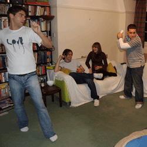

Video games have enormous potential to study human growth and
development, as training simulators, for various jobs and skills, for
education at primary, secondary, and collegiate institutions, in
healthcare practices, and so much more. Imagine a world where you could
ask someone a question and through his or her answer, you could
identify if he or she had a neurological problem, and that the
procedure for this process is nothing more than playing a game. This
may be a future for video game play. As Griffiths states,
“Videogames can be used as research and/or measurement tools.
Furthermore, as research tools, they have great diversity." As
assessment tools, video games can measure individual performance over a
variety of tasks, which can be changed, standardized, and understood.1
Whether their underlying designs test for
reading comprehension or measure neuronal activity in a particular
region of the brain, video games have great potential in analyzing
human behaviors and characteristics.
As a research instrument, video games can reveal psychological and
physical effects produced by video game play, and they can provide
insight into the specific actions, processes, characteristics, and
behaviors that cause these effects. In a 2011 Chicago press release, an
fMRI analysis found lasting effects of violent video game play on brain
regions in young adult men after one week of game play2.
After a week without play, these changes diminished; however, these
results indicate that violent video games can be detrimental to brain
function. If we maintain a holistic approach when dealing with video
game play, we can investigate these effects and provide instruction on
their implementation, i.e. incorporate less violence in video games
while maintaining competition or making the player cognizant of these
violent effects. In a 2010 study by Erickson et al., a connection was
found between striatal volume, video game acquisition, and video game
improvement3. The striatum relays input from the cortex
to the basal ganglia, which plays a role in the initiation of actions
as well as shifting between actions that offer the greatest reward4
. Subjects revealed an increase in
cortical involvement and processing, and this provides a direct link
between brain neurology and video game performance; regions in the
brain responsible for learning grew in relation to video game play.
Once a multitude of video game effects are understood, we can design
video games with specific features and for specific purposes, e.g. to
identify if feedback in the form of progress and percentages vs. points
and grades contributes more towards the player achieving success and
accomplishing missions5. Intrinsically, video
games are valuable instruments that allow us to study various changes
and developments in human psychology and physiology.
Sources:
- Griffiths, M. (2002). The educational benefits of videogames. Education and Health, 20(3), 47-51. Retrieved from http://nottinghamtrent.academia.edu/MarkGriffiths/Papers/410525/Griffiths_M.D._2002_._The_educational_benefits_of_videogames_Education_and_Health_20_47-51
- Wang, Y., Hummer, T., Kronenberger, W., Mosier, K., & Mathews, V. (2011). Violent video games alter brain function in young men. Radiological Society of North America. Chicago. Retrieved from http://www.sciencedaily.com/releases/2011/11/111130095251.htm
- Erickson, K., Boot, W., Basak, C., Neider, M., Prakash, R., Voss, M., … Kramer, A. (2010). Striatal volume predicts level of video game skill acquisition. Cerebral Cortex, 20(11), 2522-2530. doi: 10.1093/cercor/bhp293
- Gazzaniga, M., Ivry, R., & Mangun, G. (2009). Cognitive neuroscience: The biology of the mind. New York, NY: W. W. Norton & Company, Inc.
- Dignan, A. (2011). Game frame: Using games as a strategy for success. New York, NY: FREE PRESS.
| Holistic Gaming | |
|---|---|
| Games & Play  |
Video Games
& Video Game Play  |
| Educational
Games |
Learning Tools |
| Physical & Psychological Effects of Video Game Play | |
Brain-Mind
Relationship |
The Good  |
The Bad |
The Ugly
Duckling |
| A Future for Holistic Gaming | |
Research Tools |
Educational
Value |
| Prevention
& Treatment Strategies  |
A Complete
Systems Learning Game  |